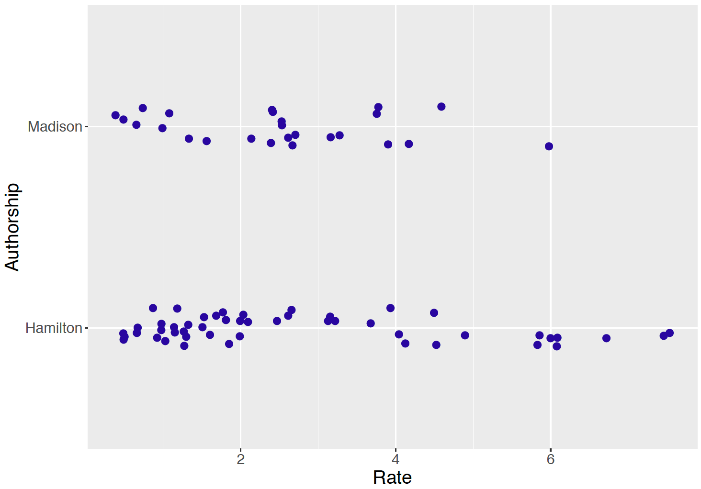
9 Case Studies
9.1 Introduction
This chapter provides several illustrations of Bayesian modeling that extend some of the models described in earlier chapters.
Mosteller and Wallace (1963), in one of the early significant Bayesian applications, explore the frequencies of word use in the well-known Federalist Papers to determine the authorship between Alexander Hamilton and James Madison. Section 13.2 revisits this word use application. This study raises several interesting explorations such as determining a suitable sampling distribution and finding suitable ways of comparing the word use of several authors.
In sports, teams are very interested in learning about the pattern of increase and decrease in the performance of a player, commonly called a career trajectory. A baseball player is believed to reach a level of peak performance at age of 30, although this “peak age” may vary between players. Section 13.3 illustrates the use of a hierarchical model to simultaneously estimate the career trajectories for a group of baseball players using on-base percentage as the measure of performance.
Suppose a class is taking a multiple choice exam where there are two groups of students. Some students are well-prepared and are familiar with the exam content and other students have not studied and will essentially guess at the answers to the exam questions. Section 13.4 introduces a latent class model that assumes that the class consists of two groups of students with different success rates and the group identifications of the students are unknown. In the posterior analysis, one learns about the location of the two success rates and the group classifications of the students. Using this latent class framework, the Federalist Papers example is revisited and the frequencies of particular filler words is used to learn about the true author identity of some disputed authorship Federalist Papers.
9.2 Federalist Papers Study
9.2.1 Introduction
The Federalist Papers were a collection of articles written in the late 18th century by Alexander Hamilton, James Madison and John Jay to promote the ratification of the United States Constitution. Some of these papers are known to be written by Hamilton, other papers were clearly written by Madison, and the true authorship of some of the remaining papers has been in doubt.
In one of the early significant applied Bayesian papers, Mosteller and Wallace (1963) illustrate the use of Bayesian reasoning in solving the authorship problem. They focused on the frequencies of word counts. Since the topic of the article may influence the frequencies of words used, Mosteller and Wallace were careful to focus on counts of so-called filler words such as “an”, “of”, and “upon” that are not influenced by the topics of the articles.
In this case study, the use of different sampling distributions is described to model word counts in a group of Federalist Papers. The Poisson distribution is perhaps a natural choice for modeling a group of word counts, but it will be seen that the Poisson can not accommodate the spread of the distribution of word counts. This motivates the use of a Negative Binomial sampling distribution and this model will be used to compare rates of use of some filler words by Hamilton and Madison.
9.2.2 Data on word use
To begin our study, let’s look at the occurrences of the word “can” in all of the Federalist Papers authored by Alexander Hamilton or James Madison. Table 9.1 shows the format of the data. For each paper, the total number of words, the number of occurrences of the word “can” and the rate of this word per 1000 words are recorded.
| Name | Total | word | y | Rate | Authorship | |
|---|---|---|---|---|---|---|
| 1 | Federalist No. 1 | 1622 | can | 3 | 1.85 | Hamilton |
| 2 | Federalist No. 10 | 3008 | can | 4 | 1.33 | Madison |
| 3 | Federalist No. 11 | 2511 | can | 5 | 1.99 | Hamilton |
| 4 | Federalist No. 12 | 2171 | can | 2 | 0.92 | Hamilton |
| 5 | Federalist No. 13 | 970 | can | 4 | 4.12 | Hamilton |
| 6 | Federalist No. 14 | 2159 | can | 9 | 4.17 | Madison |
Figure 9.1 displays parallel jittered dotplots of the rates (per 1000 words) of “can” for the Madison and Hamilton papers. Note the substantial variability in the rates across papers. But it appears that this is a slight tendency for Hamilton to use this particular word more frequently than Madison. Later in this section we will formally perform inference about the ratio of the true rates of use of “can” for the two authors.
9.2.3 Poisson density sampling
Consider first the word use of all of the Federalist Papers written by Hamilton. The initial task is to find a suitable sampling distribution for the counts of a particular function word such as “can”. Since Poisson is a popular sampling distribution for counts, it is initially assumed that for the \(i\)-th paper the count \(y_i\) of the word “can” has a Poisson density with mean \(n_i \lambda /1000\) where \(n_i\) is the total number of words and \(\lambda\) is the true rate of the word among 1000 words. There are \(N\) papers in total. Using the Poisson density expression, one writes \[\begin{equation} f(Y_i = y_i \mid \lambda) = \frac{(n_i \lambda / 1000)^{y_i} \exp(-n_i \lambda / 1000)}{y_i!}. \end{equation}\] Assuming independence of word use between papers, the likelihood function is the product of Poisson densities \[\begin{equation} L(\lambda) = \prod_{i = 1}^N f(y_i \mid \lambda), \end{equation}\] and the posterior density of \(\lambda\) is given by \[\begin{equation} \pi(\lambda \mid y_1, \cdots, y_N) \propto L(\lambda) \pi(\lambda), \end{equation}\] where \(\pi()\) is the prior density.
R Work Suppose one knows little about the true rate of “can”s and to reflect this lack of information, one assigns \(\lambda\) a Gamma density with parameters \(\alpha = 0.001\) and \(\beta = 0.001\). Recall in Chapter 8 Section 8.8, a Gamma prior is conjugate to a Poisson sampling model. A JAGS script is written to specify this Bayesian model and by use of the run.jags() function, one obtains a simulated sample of 5000 draws from the posterior distribution.
modelString = "
model{
## sampling
for (i in 1:N) {
y[i] ~ dpois(n[i] * lambda / 1000)
}
## prior
lambda ~ dgamma(0.001, 0.001)
}
"When one observes count data such as these, one general concern is . Do the observed counts display more variability than one would anticipate with the use of this Poisson sampling model? One can check for overdispersion by use of a posterior predictive check. First one simulates one replicated dataset from the posterior predictive distribution. This is done in two steps: 1) one simulates a value of \(\lambda\) from the posterior distribution; 2) given the simulated value \(\lambda = \lambda^*\), one simulates counts \(y^{R}_1, ..., y^{R}_N\) from independent Poisson distribution with means \(n_1 \lambda^* / 1000, ..., n_N \lambda^* / 1000\). Given a replicated dataset of counts {\(y^{R}_i\)}, one computes the standard deviation. In this setting a standard deviation is a reasonable choice of a testing function since one is concerned about the variation or spread in the data.
one_rep <- function(i){
lambda <- post[i]
sd(rpois(length(y), n * lambda / 1000))
}
sapply(1:5000, one_rep) -> SDOne repeats this process 5000 times, obtaining 5000 replicated datasets from the posterior predictive distribution and 5000 values of the standard deviation. Figure 9.2 displays a histogram of the standard deviations from the predictive distribution and the standard deviation of the observed counts {\(y_i\)} is displayed as a vertical line. Note that the observed standard deviation is very large relative to the standard deviations of the counts from the predictive distribution. The takeaway is that there is more variability in the observed counts of “can”s than one would predict from the Poisson sampling model.
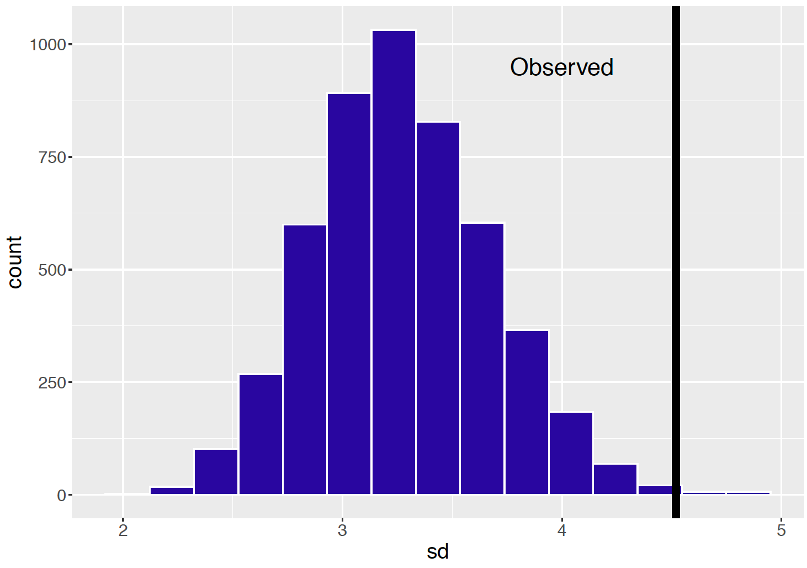
9.2.4 Negative Binomial sampling
In the previous section, we presented evidence that the observed counts of “can” from a group of Federalist Papers of Alexander Hamilton were overdispersed in that there was more variability in the counts than predicted by the Poisson sampling model. One way of handling this overdispersion issue to find an alternative sampling density for the counts that is able to accommodate this additional variation.
One popular alternative density is the Negative Binomial density. Recall that \(y_i\) represents the number of “can”s in the \(i\)-th Federalist Papers. Conditional on parameters \(\alpha\) and \(\beta\), one assigns \(y_i\) the Negative Binomial density defined as \[\begin{equation} f(Y_i = y_i \mid \alpha, \beta) = \frac{\Gamma(y_i + \alpha)}{\Gamma(\alpha)} p_i^\alpha (1 - p_i)^{y_i}, \end{equation}\] where \[\begin{equation} p_i = \frac{\beta}{\beta + n_i / 1000}. \end{equation}\] One can show that this density is a natural generalization of the Poisson density. The mean count is given by \(E(y_i) = \mu_i\) where \[\begin{equation} \mu_i = \frac{n_i}{1000}\frac{\alpha}{\beta}. \end{equation}\] Recall that the mean count for \(y_i\) the Poisson model was \(n_i \lambda / 1000\), so the ratio \(\alpha / \beta\) is playing the same role as \(\lambda\) – one can regard \(\alpha / \beta\) as the true rate of the particular word per 1000 words.
One can show that the variance of the count \(y_j\) is given by \[\begin{equation} Var(y_i) = \mu_i \left(1 + \frac{n_i}{1000 \beta}\right). \end{equation}\] The variance for the Poisson model is equal to \(\mu_i\), so the Negative Binomial model has the extra multiplicative term \(\left(1 + \frac{n_i}{1000 \beta}\right)\). So the Negative Binomial family is able to accommodate the additional variability in the counts {\(y_i\)}.
The posterior analysis using a Negative Binomial density is straightforward. The counts \(y_1, ..., y_N\) are independent Negative Binomial with parameters \(\alpha\) and \(\beta\) and the likelihood function is equal to \[\begin{equation} L(\alpha, \beta) = \prod_{i=1}^N f(y_i \mid \alpha, \beta). \end{equation}\] If little is known a priori about the locations of the positive parameter values \(\alpha\) and \(\beta\), then it reasonable to assume the two parameters are independent and assign to each \(\alpha\) and \(\beta\) a Gamma density with parameters 0.001 and 0.001. Then the posterior density is given by \[\begin{equation} \pi(\alpha, \beta \mid y_1, \cdots, y_N) \propto L(\alpha, \beta) \pi(\alpha, \beta) \end{equation}\] where \(\pi(\alpha, \beta)\) is the product of Gamma densities.
R Work One simulates the posterior with Negative Binomial sampling using JAGS. The Negative Binomial density is represented by the JAGS function dnegbin() with parameters p[i] and alpha. In the JAGS script below, note that one first defines p[i] in terms of the parameter beta and the sample size n[i], and then expresses the Negative Binomial density in terms of p[i] and alpha.
modelString = "
model{
## sampling
for(i in 1:N){
p[i] <- beta / (beta + n[i] / 1000)
y[i] ~ dnegbin(p[i], alpha)
}
## priors
mu <- alpha / beta
alpha ~ dgamma(.001, .001)
beta ~ dgamma(.001, .001)
}
"We earlier made a statement that the Negative Binomial density can accommodate the extra variability in the word counts. One can check this statement by a posterior predictive check. One replication of the posterior predictive checking method is implemented in the R function one_rep(). We start with a simulated value \((\alpha^*, \beta^*)\) from the posterior distribution. Then we simulated a replicated dataset \(y^{R}_1, ..., y^{R}_N\) where \(y^{R}_i\) has a Negative Binomial distribution with parameters \(\alpha^*\) and \(\beta^* / (\beta^* + n_i / 1000)\). Then we compute the standard deviation of the {\(y^{R}_i\)}.
one_rep <- function(i){
p <- post$beta[i] / (post$beta[i] + n / 1000)
sd(rnbinom(length(y), size = post$alpha[i], prob = p))
}By repeating this algorithm for 5000 iterations, one has 5000 draws of the standard deviation of samples from the predictive distribution stored in the R vector
sapply(1:5000, one_rep) -> SDFigure 9.3 displays a histogram of the standard deviations of samples from the predictive distribution and the observed standard deviation of the counts is shown as a vertical line. In this case the observed standard deviation value is in the middle of the predictive distribution. The interpretation is that predictions with a Negative Binomial sampling model are consistent with the spread in the observed word counts.
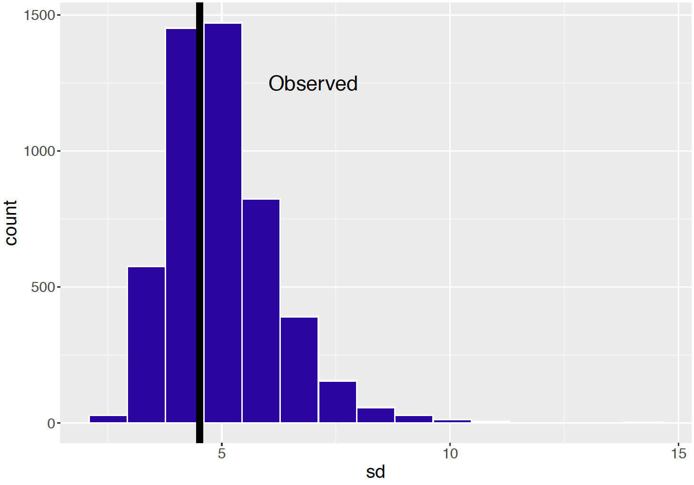
Now that the Negative Binomial model seems reasonable, one performs inferences about the mean use of the word “can” in Hamilton essays. The parameter \(\mu = \alpha / \beta\) represents the true rate of use of this word per 1000 words. Figure 9.4 displays MCMC diagnostic plots for the parameter \(\mu\). The trace plot and autocorrelation plot indicate good mixing and so one believes the histogram in the lower-left section represents the marginal posterior density for \(\mu\). A 90% posterior interval estimate for the rate of “can” is (2.20, 3.29).
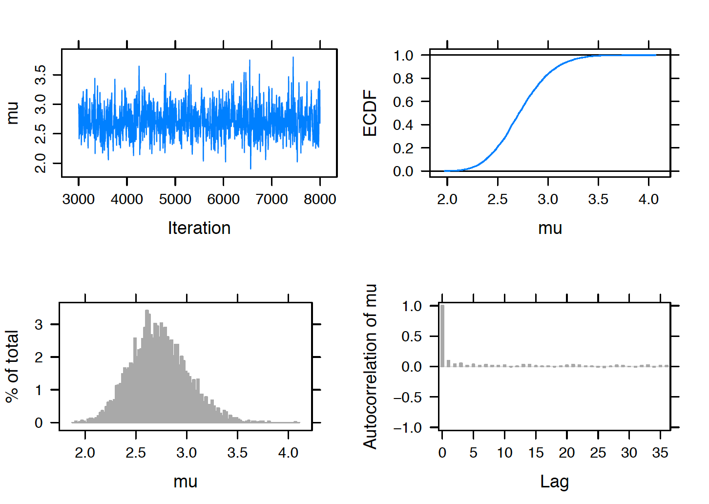
9.3 Career Trajectories
9.3.1 Introduction
For an athlete in a professional sport, his or her performance typically begins at a small level, increases to a level in the middle of his or her career where the player has peak performance, and then decreases until the player’s retirement. This pattern of performance over a player’s career is called the career trajectory. A general problem in sports is to predict future performance of a player and one relevant variable in this prediction is the player’s age. Due to the ready availability of baseball data, it is convenient to study career trajectories for baseball players, although the methodology will apply to athletes in other sports.
9.3.2 Measuring hitting performance in baseball
Baseball is a bat and ball game first played professionally in the United States in the mid 19th century. Players are measured by their ability to hit, pitch, and field, and a wide variety of statistical measures have been developed. One of the more popular measures of batting performance is the on-base percentage or OBP. A player comes to bat during a plate appearance and it is desirable for the batter to get on base. The OBP is defined to be the fraction of plate appearances where the batter reaches a base. As an example, during the 2003 season, Chase Utley had 49 on-base events in 152 plate appearances and his OBP was \(49 / 152 = 0.322\).
9.3.3 A hitter’s career trajectory
A baseball player typically plays between 5 to 20 years in Major League Baseball (MLB), the top-tier professional baseball league in the United States. In this case study, we explore career trajectories of the OBP measure of baseball players as a function of their ages. To illustrate a career trajectory, consider Chase Utley who played in the Major Leagues from 2003 through 2018. Figure 9.7 displays Utley’s OBP as a function of his age for all of the seasons of his career. A quadratic smoothing curve is added to the scatterplot. One sees that Utley’s OBP measure increases until about age 30 and then steadily decreases towards the end of his career.
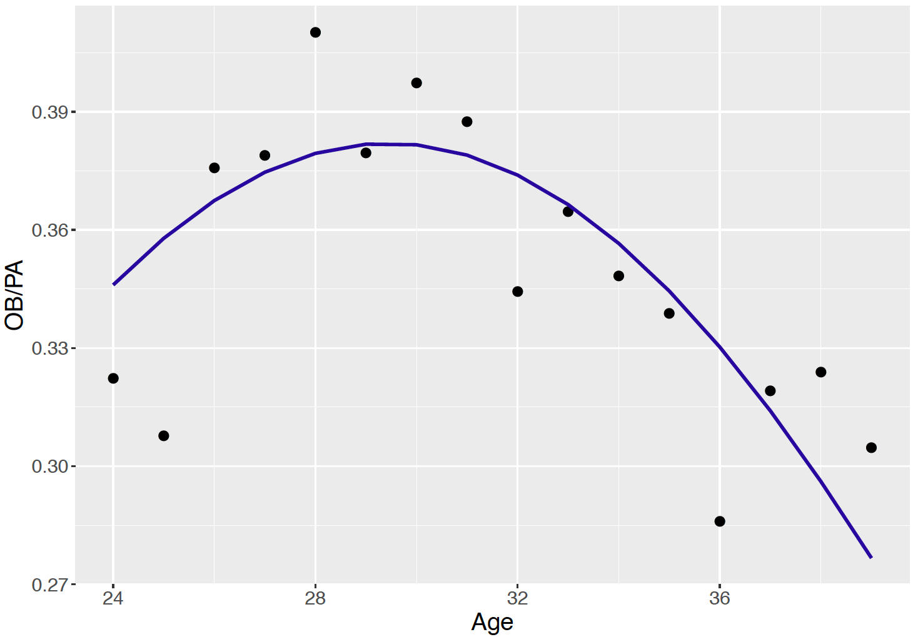
Figure 9.8 displays the career trajectory of OBP for another player Josh Phelps who had a relatively short baseball career. In contrast, Phelps does not have a clearly defined career trajectory. In fact, Phelps’ OBP values appear to be relatively constant from ages 24 to 30 and the quadratic smoothing curve indicates that Phelps had a minimum OBP at age 26. The purpose of this case study is to see if one can improve the career trajectory smooth of this player by a hierarchical Bayesian model that combines data from a number of baseball players. Recall in Chapter 10, we have seen how hierarchical Bayesian models have the pooling effect that could borrow information from other groups to improve the estimation of one group, especially for groups with small sample size.
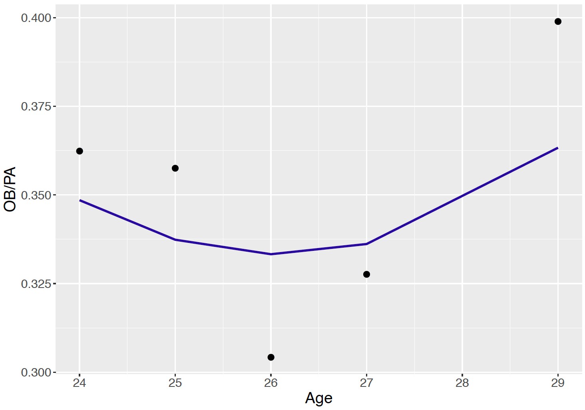
9.3.4 Estimating a single trajectory
First we consider learning about a single hitter’s OBP career trajectory. Let \(y_j\) denote the number of on-base events in \(n_j\) plate appearances during a hitter’s \(j\)-th season. It is reasonable to assume that \(y_j\) has a Binomial distribution with parameters \(n_j\) and probability of success \(p_j\). One represents the logit of the success probability as a quadratic function of the player’s age: \[\begin{equation} \log \left(\frac{p_j}{1-p_j}\right) = \beta_0 + \beta_1 (x_j - 30) + \beta_2 (x_j - 30)^2, \end{equation}\] where \(x_j\) represents the age of the player in the \(j\)-th season.
Note that the age value is centered by 30 in the logistic model – this is done for ease of interpretation. The intercept \(\beta_0\) is an estimate of the player’s OBP performance at age 30. Specific functions of the regression vector \(\beta = (\beta_0, \beta_1, \beta_2)\) are of specific interest in this application.
- The quadratic function reaches its largest value at \[\begin{equation*} h_1(\beta) = 30 - \frac{\beta_1}{2 \beta_2}. \end{equation*}\] This is the age where the player is estimated to have his peak on-base performance during his career.
- The maximum value of the curve, on the logistic scale, is \[\begin{equation*} h_2(\beta) = \beta_0 - \frac{\beta_1^2}{4 \beta_2}. \end{equation*}\] The maximum value of the curve on the probability scale is \[\begin{equation} p_{max} = \exp(h_2(\beta)) / (1 + \exp(h_2(\beta))). \end{equation}\] The parameter \(p_{max}\) is the estimated largest OBP of the player over his career.
- The coefficient \(\beta_2\), typically a negative value, tells us about the degree of curvature in the quadratic function.
If a player has a “large” value of \(\beta_2\), this indicates that he more rapidly reaches his peak level and more rapidly decreases in ability until retirement. One simple interpretation is that \(\beta_2\) represents the change in OBP from his peak age to one year later.
It is straightforward to fit this Bayesian logistic model using the JAGS software. Suppose one has little prior information about the location of the regression vector \(\beta\). Then one assumes the regression coefficients are independent with each coefficient assigned a Normal prior with mean 0 and precision 0.0001. The posterior density of \(\beta\) is given, up to an unknown proportionality constant, by \[\begin{equation} \pi(\beta \mid \{y_j\}) \propto \prod_j \left( p_j ^{y_j}(1 - p_j)^{n_j - y_j} \right) \pi(\beta), \end{equation}\] where \(p_j\) is defined by the logistic model and \(\pi(\beta)\) is the prior density.
R Work The JAGS model script is shown below. The dbin() function is used to define the Binomial distribution and the logit() function describes the log odds reexpression.
modelString = "
model {
## sampling
for (j in 1:N){
y[j] ~ dbin(p[j], n[j])
logit(p[j]) <- beta0 + beta1 * (x[j] - 30) +
beta2 * (x[j] - 30) * (x[j] - 30)
}
## priors
beta0 ~ dnorm(0, 0.0001)
beta1 ~ dnorm(0, 0.0001)
beta2 ~ dnorm(0, 0.0001)
}
"The JAGS software is used to simulate a sample from the posterior distribution of the regression vector \(\beta\). From this sample, it is straightforward to learn about any function of the regression vector of interest. To illustrate, one performs inference about the peak age function \(h_1(\beta)\) by computing this function on the simulated \(\beta\) draws – the output is a posterior sample from the peak age function. In a similar fashion, one obtains a sample from the posterior of the maximum value function \(p_{max}\) by computing this function on the simulated \(\beta\) values. Figure 9.9 displays density estimates of the simulated values of \(h_1(\beta)\) and \(p_{max}\). From this graph, one sees that Utley’s peak performance was most likely achieved at age 29, although there is uncertainty about this most likely peak age. Also the posterior of the peak value \(p_{max}\) indicates that Utley’s peak on-base probability ranged from 0.38 and 0.40.
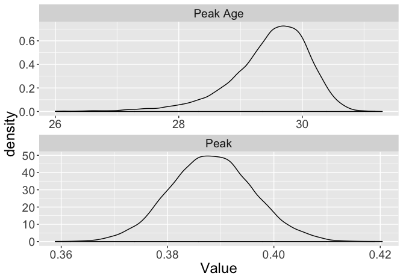
9.3.5 Estimating many trajectories by a hierarchical model
We have focused on estimating the career trajectory of a single baseball player such as Chase Utley. But there are many baseball players and it is reasonable to want to simultaneously estimate the career trajectories for a group of players. As an example, suppose one focuses on the Major League players who were born in the year 1978 and had at least 1000 career at-bats. Figure 9.10 displays scatterplots of age and OBP with quadratic smoothing curves for the 36 players in this group. Looking at these curves, one notices that many of the curves follow a familiar concave down shape with the player achieving peak performance near an age of 30. But for some players, especially for those players who played a small number of seasons, note that the trajectories have different shapes. Some trajectories are relatively constant over the age variable and other trajectories have an unusual concave up appearance.
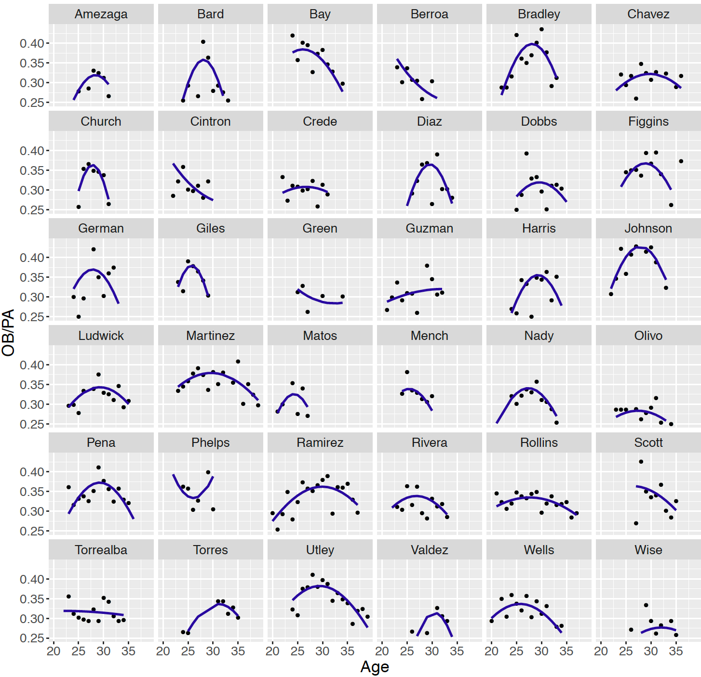
In this situation, it may be desirable to partially pool the data from the 36 players using a hierarchical model to obtain improved trajectory estimates for all players. For the \(i\)-th player, one observes the on-base events {\(y_{ij}\)} where \(y_{ij}\) is Binomial with sample size \(n_{ij}\) and probability of on-base success \(p_{ij}\). The logit of the on-base probability for the \(i\)-th player during the \(j\)-th season is given by \[\begin{equation} \log \left(\frac{p_{ij}}{1-p_{ij}}\right) = \beta_{i0} + \beta_{i1} (x_{ij} - 30) + \beta_{i2} (x_{ij} - 30)^2, \end{equation}\] where \(x_{ij}\) is the age of the \(i\)-th player during the \(j\)-th season. If \(\beta_i = (\beta_{i0}, \beta_{i1}, \beta_{i2})\) represents the vector regression coefficients for the \(i\)-th player, then one is interested in estimating the regression vectors \((\beta_1, ..., \beta_N)\) for the \(N\) players in the study.
One constructs a two-stage prior on these regression vectors. In Chapter 10, one assumed that the Normal means were distributed according to a common normal distribution. In this setting, since each regression vector has three components, at the first stage of the prior, one assumes that \(\beta_1, ..., \beta_N\) are independent distributed from a common multivariate Normal distribution with mean vector \(\mu_\beta\) and precision matrix \(\tau_\beta\). Then, at the second stage, vague prior distributions are assigned to the unknown values of \(\mu_\beta\) and \(\tau_\beta\).
R Work In our application, there are \(N = 36\) players, so one is estimating 36 \(\times\) 3 = 108 regression parameters together with unknown parameters in the prior distributions of \(\mu_\beta\) and \(\tau_\beta\) at the second stage. Fortunately the JAGS script defining this model is a straightforward extension of the JAGS script for a logistic regression model for a single career trajectory. The variable player indicates the player number, and the variables beta0[i], beta1[i], and beta2[i] represent the logistic regression parameters for the \(i\)-th player. The vector B[j, 1:3] represents a vector of parameters for one player and mu.beta and Tau.B represent respectively the second-stage prior mean vector and precision matrix values. The variables mean, prec, Omega are specified parameters that indicate weak information about the parameters at the second stage.
modelString = "
model {
## sampling
for (i in 1:N){
y[i] ~ dbin(p[i], n[i])
logit(p[i]) <- beta0[player[i]] +
beta1[player[i]] * (x[i] - 30) +
beta2[player[i]] * (x[i] - 30) * (x[i] - 30)
}
## priors
for (j in 1:J){
beta0[j] <- B[j,1]
beta1[j] <- B[j,2]
beta2[j] <- B[j,3]
B[j,1:3] ~ dmnorm (mu.beta[], Tau.B[,])
}
mu.beta[1:3] ~ dmnorm(mean[1:3],prec[1:3 ,1:3 ])
Tau.B[1:3 , 1:3] ~ dwish(Omega[1:3 ,1:3 ], 3)
}
"After JAGS is used to simulate from the posterior distribution of this hierarchical model, a variety of inferences are possible. The player trajectories \(\beta_1, ..., \beta_{36}\) are a sample from a Normal distribution with mean \(\mu_\beta\). Figure 9.11 displays draws of the posterior of the mean peak age \(h_1(\mu_\beta)\) expressed as probabilities over a grid of age values from 23 to 37. The takeaway if that the career trajectories appear to be centered about 29.5 – a typical MLB player in this group peaks in on-base performance about age 29.5.
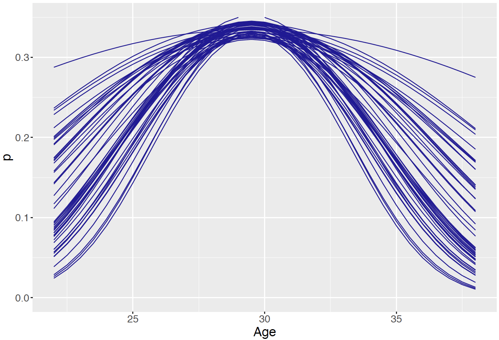
By combining data across players, the Bayesian hierarchical model is helpful in borrowing information for estimating the career trajectories of players with limited career data. This is illustrated in Figure 9.12 that shows individual and hierarchical posterior mean fits of the career trajectories for two players. For Chase Utley, the two fits are very similar since Utley’s career trajectory was well-estimated just using his data. In contrast, we saw that Phelps had an unrealistic concave up individual estimated trajectory. In the hierarchical model, this career trajectory is corrected to be more similar to the concave down trajectory for most players.
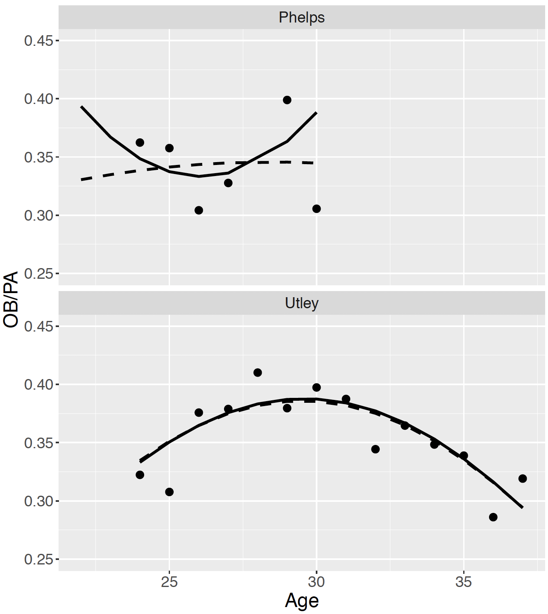
9.4 Latent Class Modeling
9.4.1 Two classes of test takers
Suppose thirty people are given a 20-question true/false exam and the number of correct responses for all people are graphed in Figure 9.13. From this figure note that test takers 1 through 10 appear to have a low level of knowledge about the subject matter as their scores are centered around 10. The remaining test takers 11 through 30 seem to have a higher level of knowledge as their scores range from 15 to 20.
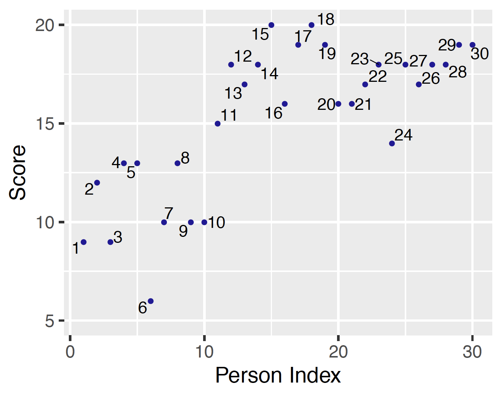
Are there really two groups of test takers, a random-guessing group and a knowledgeable group? If so, how can one separate the people in the two ability groups, and how can one make inferences about the correct rate for each group? Furthermore, can one be sure that there exists only two ability groups? Is it possible to have more than two groups of people by ability level?
The above questions relate to the classification of observations and the number of classes. In the introduction of hierarchical models in Chapter 10, there was a natural grouping of the observations. For example, in the animation movie ratings example in Chapter 10, each rating was made on one animation movie, so grouping based on movie is natural, and the group assignment of the observations was known. It was then reasonable to specify a two-stage prior where the rating means shared the same prior distribution at the first stage.
In contrast, in the true/false exam example, since the group assignment is not known, it not possible to proceed with a hierarchical model with a common prior at the first stage. In this testing example one believes the people fall in two ability groups, however one does not observe the actual classification of the people into groups. So it is assumed that there exists latent or unobserved classification of observations. The class assignments of the individuals are unknown and can be treated as random parameters in our Bayesian approach.
If there exists two classes, the class assignment parameter for the \(i\)-th observation \(z_i\) is unknown and assumed to follow a Bernoulli distribution with probability \(\pi\) belonging to the first class, i.e. \(z_i = 1\). With probability \(1 - \pi\) the \(i\)-th observation belongs to the second class, i.e. \(z_i = 0\). \[\begin{equation} z_i \mid \pi \sim \textrm{Bernoulli}(\pi). \end{equation}\] If one believes there are more than two classes, the class assignment parameter follows a Multinomial distribution. For ease of description of the model, we focus on the two classes situation.
Once the class assignment \(z_i\) is known for observation \(i\), the response variable \(Y_i\) follows a data model with a group-specific parameter. In the case of a true/false exam where the outcome variable \(Y_i\) is the number of correct answers, the Binomial model is a good choice for a sampling model. The response variable \(Y_i\) conditional on the class assignment variable \(z_i\) is assigned a Binomial distribution with probability of success \(p_{z_i}\). \[\begin{equation} Y_i = y_i \mid z_i, p_{z_i} \sim \textrm{Binomial}(20, p_{z_i}). \end{equation}\] One writes the success probability \(p_{z_i}\) with subscript \(z_i\) since this probability is class-specific. For the guessing group, the number of correct answers is Binomial with parameter \(p_1\), and for the knowledgeable group the number of correct answers is Binomial with parameter \(p_0\).
This model for responses to a true/false with unknown ability levels illustrates latent class modeling. The fundamental assumption is that there exists unobserved two latent classes of observations, and each latent class has its own sampling model with class-specific parameters. All \(n\) observations belong to one of the two latent classes and each observations is assigned to the latent classes one and two with respective probabilities \(\pi\) and \((1 - \pi)\). From Equation (13.17), once the latent class assignment is determined, the outcome variable \(y_i\) follows a class-specific data model as in Equation (13.18).
The tree diagram below illustrates the latent class model.
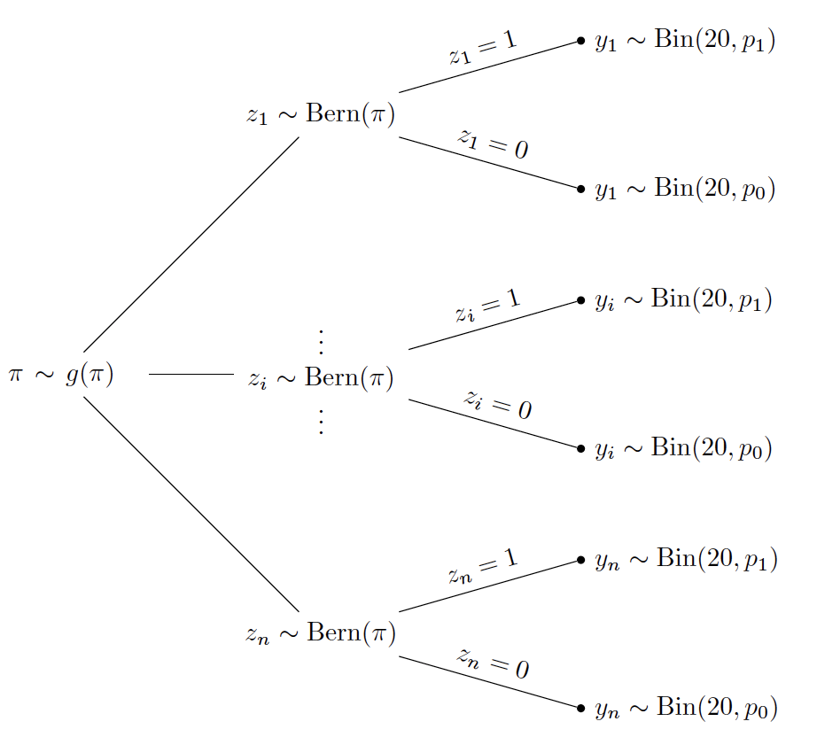
To better understand this latent class model, consider in a thought experiment where one simulates outcomes \(y_1, \cdots, y_n\) from this model.
Step 1: First simulate the latent class assignments of the \(n\) test takers. One samples \(n\) values, \(z_1, \cdots, z_n\), from a Bernoulli distribution with probability \(\pi\). Once the latent class assignments are simulated, one has partitioned the test takers into the random-guessing group where \(z_i = 1\) and the knowledgeable group where \(z_i = 0\).
Step 2: Now that the test takers’ classifications are known, the outcomes are simulated by the use of Binomial distributions. If a test taker’s classification is \(z_i = 1\), she guesses at each question with success probability \(p_1\) and one observes the test score which is the Binomial outcome \(Y_i \sim \textrm{Binomial}(20, p_1)\). Otherwise if the classification is \(z_i = 0\), she answers a question correctly with probability \(p_0\) and one observes the test score \(Y_i \sim \textrm{Binomial}(20, p_0)\).
Latent class models provide the flexibility of allowing unknown class assignments of observations and the ability to cluster observations with similar characteristics. In the true/false exam example, the fitted latent class model will pool one class of observations with a lower success rate and pool other class with a higher success rate. This fitted model also estimates model parameters for each class, providing insight of features of each latent class.
9.4.2 A latent class model with two classes
This section builds on the previous section to describe the details of the model specification of a latent class model with two classes for the true/false exam example. The JAGS software is used for MCMC simulation and several inferences are described such as identifying the class for each test taker and learning about the success rate for each class.
Suppose the true/false exam has \(m\) questions and \(y_i\) denotes the score of observation \(i\), \(i = 1, \cdots, n\). Assume there are two latent classes and each observation belongs to one of the two latent classes. Let \(z_i\) be the class assignment for observation \(i\) and \(\pi\) be the probability of being assigned to class 1. Given the latent class assignment \(z_i\) for observation \(i\), the score \(Y_i\) follows a Binomial distribution with \(m\) trials and a class-specific success probability. Since there are only two possible class assignments, all observations assigned to class 1 share the same correct success parameter \(p_1\) and all observations assigned to class 0 share the same success rate parameter \(p_0\). The specification of the data model is expressed as follows: \[\begin{equation} Y_i = y_i \mid z_i, p_{z_i} \sim \textrm{Binomial}(m, p_{z_i}), \end{equation}\] \[\begin{equation} \label{eq:Bern2} z_i \mid \pi \sim \textrm{Bernoulli}(\pi). \end{equation}\]
In this latent class model there are many unknown parameters. One does not know the class assignment probability \(\pi\), the class assignments \(z_1, ..., z_n\), and the probabilities \(p_1\) and \(p_0\) for the two Binomial distributions. Some possible choices for prior distributions are discussed in this section.
The parameters \(\pi\) and \((1 - \pi)\) are the latent class assignment probabilities for the two classes. If additional information is available which indicates, for example, that 1/3 of the observations belonging to class 1, then \(\pi\) is considered as fixed and set to the value of 1/3. If no such information is available, one can consider \(\pi\) as unknown and assign this parameter a prior distribution. A natural choice for prior on a success probability is a Beta prior distribution with shape parameters \(a\) and \(b\).
The parameters \(p_1\) and \(p_0\) are the success rates in the Binomial model in the two classes. If one believes that the test takers in class 1 are simply random guessers, then one fixes \(p_1\) to the value of 0.5. Similarly, if one believes that test takers in class 0 have a higher success rate of 0.9, then one sets \(p_0\) to the value 0.9. However, if one is uncertain about the values of \(p_1\) and \(p_0\), one lets either or both success rates be random and assigned prior distributions.
Scenario 1: known parameter values
We begin with a simplified version of this latent class model. Consider the use of the fixed values \(\pi = 1/3\) and \(p_1 = 0.5\), and a random \(p_0\) from a Uniform distribution between 0.5 and 1. This setup indicates that one believes strongly that one third of the test takers belong to the random-guessing class, while the remaining two thirds of the test takers belong to the knowledgeable class. One is certain about the success rate of the guessing class, but the location of the correct rate of the knowledgeable class is unknown in the interval (0.5, 1).
R Work The JAGS model script is shown below. One introduces a new variable theta[i] that indicates the correct rate value for observation i. In the sampling section of the JAGS script, the first block is a loop over all observations, where one first determines the rate theta[i] based on the classification value z[i]. The equals command evaluates equality, for example, equals(z[i], 0) returns 1 if z[i] equals to 0, and returns 0 otherwise. This indicates that the rate theta[i] will either be equal to p1 or p0 depending on the value z[i].
One should note in JAGS, the classification variable z[i] takes values of 0 and 1, corresponding to the knowledgeable and guessing classes, respectively. As \(\pi\) is considered fixed and set to 1/3, the variable z[i] is assigned a Bernoulli distribution with probability 1/3. To conclude the script, in the prior section the guessing rate parameter p1 is assigned the value 0.5 and the rate parameter p0 is assigned a Beta(1, 1) distribution truncated to the interval (0.5, 1) using T(0.5, 1).
modelString<-"
model {
## sampling
for (i in 1:N){
theta[i] <- equals(z[i], 1) * p1 + equals(z[i], 0) * p0
y[i] ~ dbin(theta[i], m)
}
for (i in 1:N){
z[i] ~ dbern(1/3)
}
## priors
p1 <- 0.5
p0 ~ dbeta(1,1) T(0.5, 1)
}"One performs inference for theta and p0 in JAGS by looking at their posterior summaries. Note that there are \(n = 30\) test takers, each with an associated theta indicating the correct success rate of test taker i. The variable p0 is the estimate of the correct rate of the knowledgeable class.
How are the correct rates estimated for different test takers by the latent class model? Before looking at the results, let’s revisit the dataset as shown in Figure 9.13. Among the test takers with lower scores, it is obvious that test taker # 6 with a score of 6 is likely to be assigned to the random-guessing class, whereas test takers # 4 and # 5 with a score of 13 are probably assigned to the knowledgeable class. Among test takers with higher scores, test takers # 15 and # 17 with respective scores of 20 and 19 are most likely to be assigned to the knowledgeable class, and test taker # 24 with a score of 14 is also likely assigned to the knowledgeable class.
| Test Taker | Score | Mean | Median | 90% Credible Interval |
|---|---|---|---|---|
| # 4 | 13 | 0.553 | 0.500 | (0.500, 0.876) |
| # 5 | 13 | 0.555 | 0.500 | (0.500, 0.875) |
| # 6 | 6 | 0.500 | 0.500 | (0.500, 0.500) |
| # 15 | 20 | 0.879 | 0.879 | (0.841, 0.917) |
| # 17 | 19 | 0.878 | 0.879 | (0.841, 0.917) |
| # 24 | 14 | 0.690 | 0.831 | (0.500, 0.897) |
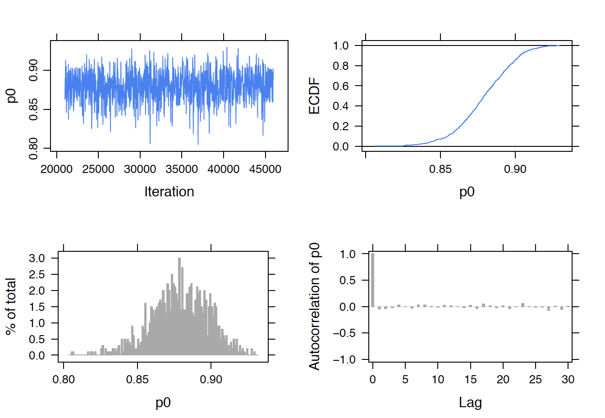
The latent class model assigns observations to one of the two latent classes at each MCMC iteration, and the posterior summaries of theta provide estimates of the correct rate of each test taker. Table 9.2 provides posterior summaries for six specific test takers. The posterior summaries of the correct rate of test taker # 6 indicate that the model assigns this test taker to the random-guessing group and the posterior mean and median of the correct rate is at 0.5. Test takers # 4 and # 5 have similar posterior summaries and are classified as random-guessing most of the time with posterior mean of correct rate around 0.55. Test taker # 24 has a higher posterior mean than the test takers # 4 and # 5. But with a posterior mean 0.69, the posterior probability for the true rate for # 24 is somewhat split between random guessing and knowledgeable states. Test takers # 15 and # 17 are always classified as knowledgeable with posterior mean and median of correct rate around 0.88.
One also summarizes the posterior draws of \(p_0\) corresponding to the success rate for the knowledgeable students. Figure 9.14 provides MCMC diagnostics of \(p_0\). Its posterior mean, median, and 90% credible interval are 0.879, 0.879, and (0.841, 0.917). These estimates are very close to the correct rate of test takers # 15 and # 17. These test takers are always classified in the knowledgeable class and their correct rate estimates are the same as \(p_0\).
Scenario 2: all parameters unknown
It is straightforward to generalize this latent class model relaxing some of the fixed parameter assumptions in Scenario 1. It was originally assumed that the class assignment parameter \(\pi = 1/3\). It is more realistic to assume that the probability of assigning an individual into the first class \(\pi\) is unknown and assign this parameter a Beta distribution with specific shape parameters. Here one assumes little is known about this classification parameter and so \(\pi\) is assigned a \(\textrm{Beta}(1, 1)\), i.e. a Uniform distribution on (0, 1). In addition, previously it was assumed that it was known that the success rate for the “guessing” group \(p_1\) was equal to 1/2. Here this assumption is relaxed by assigning the success rate \(p_1\) a Uniform prior on the interval (0.4, 0.6). If one knows only that that the success rate for the “knowing” group is \(p_0\) is larger than \(p_1\), then one assumes \(p_0\) is Uniform in the interval (\(p_1, 1\)).
R Work The JAGS script for this more general model follows. We introduce the parameter q as \(\pi\), that is the class assignment parameter and assign it a Beta distribution with parameters 1 and 1. The prior distributions for p1 and p0 are modified to reflect the new assumptions.
modelString<-"
model {
## sampling
for (i in 1:N){
theta[i] <- equals(z[i], 1) * p1 + equals(z[i], 0) * p0
y[i] ~ dbin(theta[i], m)
}
for (i in 1:N){
z[i] ~ dbern(q)
}
## priors
p1 ~ dbeta(1, 1) T(0.4, 0.6)
p0 ~ dbeta(1,1) T(p1, 1)
q ~ dbeta(1, 1)
}
"In Scenario 1, the posterior distributions of the correct rates theta[i] were summarized for all individuals. Here we instead focus on the classification parameters z[i] where z[i] = 1 indicates a person classified into the random-guessing group. Figure 9.15 displays the posterior means of the \(z_i\) for all individuals. As expected, individuals #1 through # 10 are classified as guessers and most individuals with labels 12 and higher are classified as knowledgeable. Individuals # 11 and # 24 have posterior classification means between 0.25 and 0.75 indicating some uncertainty about the correct classification for these people.
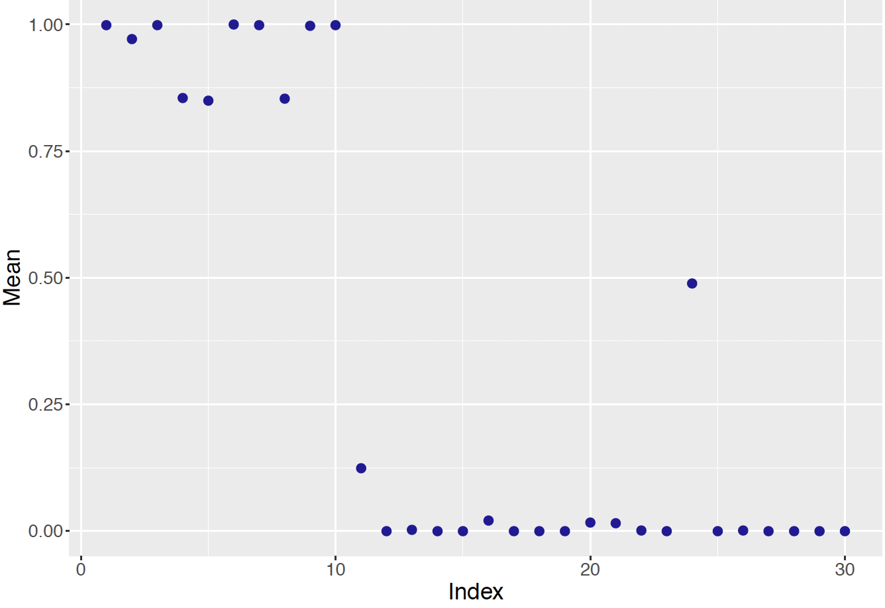
Figure 9.16 displays density estimates of the simulated draws from the posterior distributions of the class assignment parameter \(\pi\) and the rate parameters \(p_1\) and \(p_0\). As one might expect, the posterior distributions of \(p_1\) and \(p_0\) are centered about values of 0.54 and 0.89. There is some uncertainty about the class assignment parameter as reflected in a wide density estimate for \(\pi\) (\(q\) in the figure).
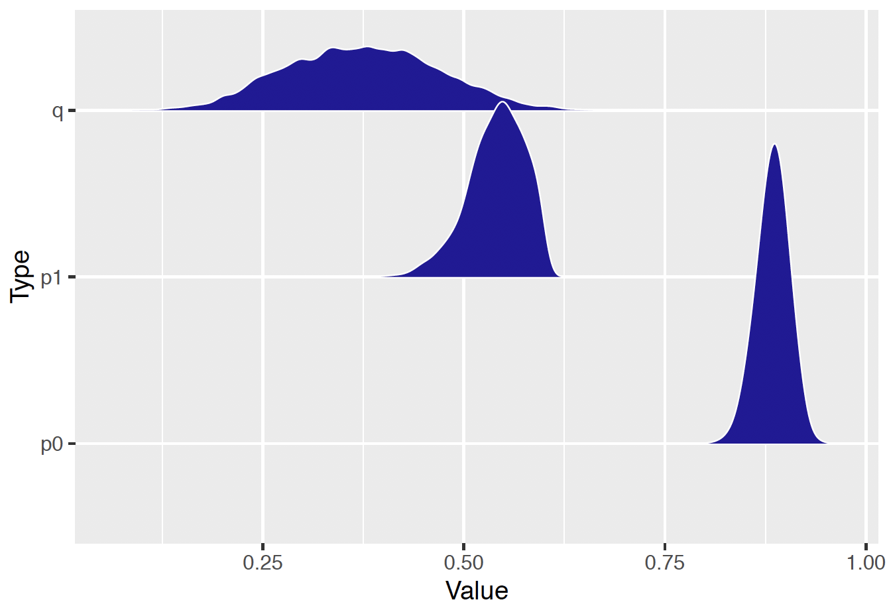
9.5 Exercises
- Federalist Papers Word Study
The frequencies of word use of Madison and Hamilton are stored in the data file fed_word_data.csv. Consider the counts of the word “there” in the 50 Federalist Papers authored by Hamilton. Suppose the count \(y_i\) in the \(i\)-th paper is distributed Poisson with mean \(n_i \lambda / 1000\) where \(n_i\) is the number of words in the paper and \(\lambda\) is the rate of the word “there” per 1000 words.
- Assuming a weakly informative prior for \(\lambda\), use JAGS to fit this Poisson sampling model.
- Compute a 90% probability interval for the rate \(\lambda\).
- Consider a new essay with 1000 words. By simulating 1000 draws from the posterior predictive distribution, construct a 90% prediction interval for the number of occurrences of the word “there” in this essay.
- Federalist Papers Word Study (continued)
Instead of Poisson sampling, suppose the count of the word \(y_i\) “there” in the \(i\)-th Federalist paper is distributed Negative Binomial with parameters \(p_i\) and \(\alpha\), where \(p_i = \beta / (\beta + n_i/1000)\) where \(n_i\) is the number of words in the paper and \(\alpha / \beta\) is the rate of the word “there” per 1000 words.
- Using a suitable weakly informative prior for \(\alpha\) and \(\beta\), use JAGS to simulate 1000 draws from the posterior distribution.
- Construct a 90% interval estimate for the rate parameter \(\alpha/\beta\).
- By simulating from the posterior predictive distribution, construct a 90% prediction interval for the number of there’s in a new essay of 1000 words.
- Compare your answers with the answers in Exercise 1 assuming Poisson sampling.
- Comparing Word Use
Using Negative Binomial sampling models, compare the average word use of Hamilton and Madison for the words “this”, “on”, “his”, and “by”. Suppose the mean rate per 1000 words is measured by \(\alpha_1 / \beta_1\) and \(\alpha_2/\beta_2\) for Hamilton and Madison, respectively. For each word, construct a 90% interval estimate for the difference in use rates \(D = \alpha_1 / \beta_1 - \alpha_2/\beta_2\). By looking at the locations of these interval estimates, which words were more often used by Hamilton and which ones were more likely to be used by Madison? The data file is fed_word_data.csv.
- Comparing Word Use (continued)
As in Exercise 3, using Negative Binomial sampling models, compare the average word use of Hamilton and Madison for the words “this”, “on”, “his”, and “by”. If the mean rate per 1000 words is measured by \(\alpha_1 / \beta_1\) and \(\alpha_2/\beta_2\) for Hamilton and Madison, respectively, suppose one is interested in comparing the rates using the ratio \[ R = \frac{\alpha_1 / \beta_1}{\alpha_2/\beta_2}. \] Construct and graph 90% interval estimates for \(R\) for each word in the study.
- Basketball Shooting Data
Table 9.3 displays the number of free throw attempts FTA and the number of successful free throws FT for all the seasons of Isiah Thomas, a great basketball point guard who played in the National Basketball Association from 1982 to 1994. This data is contained in the file nba_guards.csv where the Player variable is equal to “THOMAS.” Let \(p_j\) denote the probability of a successful free throw for the \(j\)-th season. Consider the quadratic logistic model \[\begin{equation*}
\log \left(\frac{p_j}{1-p_j}\right) = \beta_0 + \beta_1 (x_j - 30) + \beta_2 (x_j - 30)^2,
\end{equation*}\] where \(x_j\) is Thomas’ age during the \(j\)-th season.
| Age | FTA | FT | Age | FTA | FT |
|---|---|---|---|---|---|
| 20 | 429 | 302 | 27 | 351 | 287 |
| 21 | 518 | 368 | 28 | 377 | 292 |
| 22 | 529 | 388 | 29 | 229 | 179 |
| 23 | 493 | 399 | 30 | 378 | 292 |
| 24 | 462 | 365 | 31 | 377 | 278 |
| 25 | 521 | 400 | 32 | 258 | 181 |
| 26 | 394 | 305 |
- By using JAGS with a reasonable choice of weakly informative prior on the regression parameters, collect 5000 draws from the posterior distribution on \(\beta = (\beta_0, \beta_1, \beta_2)\).
- Construct a density estimate and a 90% interval estimate for the age \(h_1(\beta)\) where Thomas attained peak performance.
- Construct a density estimate and a 90% interval estimate for the probability \(p\) that Thomas makes a free throw at age 28.
- Basketball Shooting Data (continued)}
The dataset nba_guards.csv contains the number of free throw attempts FTA and the number of successful free throws FT for all of the seasons played by fifteen great point guards in the National Basketball Association. Let \(p_{ij}\) denote the probability of a successful free throw of the \(i\)-th player during the \(j\)-th season. Suppose the probabilities {\(p_{ij}\)} for the \(i\)-th player satisfy the quadratic model \[\begin{equation*}
\log \left(\frac{p_{ij}}{1-p_{ij}}\right) = \beta_{i0} + \beta_{i1} (x_{ij} - 30) + \beta_{i2} (x_{ij} - 30)^2,
\end{equation*}\] where \(x_{ij}\) is the age of the \(i\)-th player during the \(j\)-th season and \(\beta_i = (\beta_{i0}, \beta_{i1}, \beta_{i2})\) denotes the vector of regression coefficients for the \(i\)-th player.
- Construct a hierarchical prior for the regression vectors \(\beta_1, ..., \beta_{15}\) analogous to the one used for baseball hitters in the chapter.
- Use JAGS to simulate a sample of 5000 draws from the posterior distribution of the \(\beta_j\) and also of the second stage prior \(\mu_\beta\).
- For one player, consider the age \(h_1(\beta)\) where he attained peak performance in free-throw shooting. Compare the posterior distributions of \(h_1(\beta)\) using an individual logistic model and using the hierarchical model.
- Football Field Goal Kicking
The data file football_field_goal.csv contains data on field goal attempts for professional football kickers. Let \(y_j\) denote the response (success or failure) of a field goal attempt from \(x_j\) yards. One is interested in fitting the logistic model \[
\log\left(\frac{p_j}{1-p_j}\right) = \beta_0 + \beta_1 x_j,
\] where \(p_j\) is the probability of a successful attempt. Figure 9.18 displays individual logistic fits for ten kickers in the 2005 season. These fits were found using weakly informative priors on the regression parameters \(\beta_0\) and \(\beta_1\) on individual fits for each player.
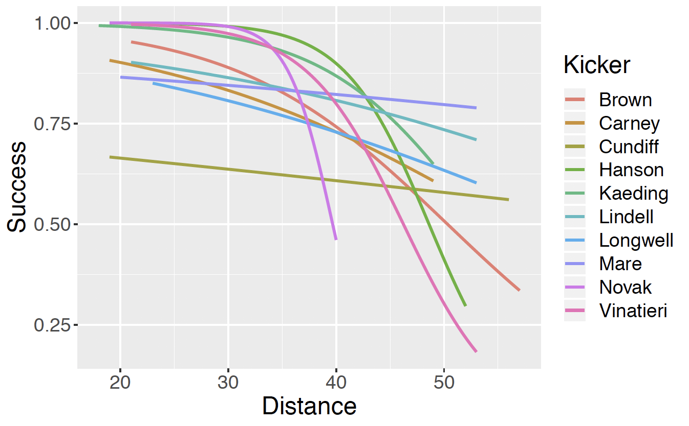
Looking at Figure 9.18, do you believe these individual fits of success probability against distance are suitable for all players? Explain.
For the player Brown, assuming this logistic model and a weakly informative prior on the regression coefficients, use JAGS to simulate from the posterior distribution. From the output to construct a 90 percent interval estimate for the probability of success at 30 yards.
Pool the data for all 10 players, and use JAGS to fit from the logistic model where the probability of success is a function of the distance. Use JAGS to simulate from the posterior and from the output construct a 90 percent interval estimate for the probability of success at 30 yards.
Compare your answers to parts (b) and (c).
- Football Field Goal Kicking (continued)
In the logistic model predicting success on a field goal attempt based on the distance in feet, suppose \(\beta_i = (\beta_{i0}, \beta_{i1})\) denotes the regression vector for the logistic model on the \(i\)-th player.
Write down a hierarchical prior for the ten regression vectors \(\beta_1, ..., \beta_{10}\) similar to what was used for the baseball hitters in the chapter.
Using JAGS, simulate a sample of 5000 from the posterior distribution of \(\beta_1, ..., \beta_{10}\).
Display the posterior means of the probabilities of success for all kickers as a function of distance similar to Figure 9.18.
For the player Brown, construct a 90 percent interval estimate for the probability of success at 30 yards. Compare your answer to the individual fit (part (b) of Exercise 7 and the pooled data fit (part (c) of Exercise 7).
- Checking for Overdispersion
In the hitter’s career trajectory example in Section 13.3.4, it was assumed that the number of on-base events in season \(y_j\) was distributed Binomial with a specific probability of success \(p_j\) where the {\(p_j\}\) satisfy a logistic quadratic model. If one views a scatterplot of the observed rates \(OB / PA\) against age for Chase Utley (Figure 9.7), one notices some variation about the fitted curve. It is natural to ask if the variability about this line is greater than one would predict from the Binomial model.
- Following the example in Section 13.3.4, obtain a posterior sample from the posterior distribution of \(\beta\) using Utley’s data and a weakly informative choice of prior distribution.
- Compute the posterior mean of \(\beta\) and obtain an estimate for the on-base probability for all of Utley’s ages.
- Write a function to simulate one replicated sample of \(y_j^{R}\) from the posterior predictive distribution. Compute the sum of squares of the rates \(y_j^{R} / n_j\) about the fitted on-base probabilities.
- Using the function written in part (c), repeat this simulation 1000 times, obtaining 1000 sum of squares values from the posterior predictive distribution.
- By comparing the posterior predictive sample in part (d) with the observed sum of squares about the fitted curve, comment about the suitability of the Binomial sampling model.
- Moby Dick Word Study
Project Gutenberg offers a large number of free electronic books and the gutenbergr R package facilitates reading in these books into R for textual analysis. Use this package to download the famous novel Moby Dick by Herman Melville and collect all of the distinct words in this novel in a data frame.
- Divide the words of the novel into 1000-word groups and count the number of occurrences of a particular filler word in each group.
- Use a Negative Binomial distribution to model the counts of the filler word across groups.
- Consider the use of a different filler word, and use a Negative Binomial distribution to model the counts of this new word across 1000-word groups.
- By use of a suitable model, compare the rates (per 1000 words) of the two types of filler words. Construct a 90% interval estimate for the ratio of rates of use of the two words.
- An Outlier Model
Suppose one observes a sample measurement data where there is a small possibility of an outlier. One observes \(y_i\) which is either Normal(\(\mu, \sigma\)) with probability \(p\) or Normal(\(\mu, 3 \sigma\)) with probability \(1 - p\). Assume a weakly informative prior on \(\mu\) and \(p\) is Beta(2, 20). Introduce latent class assignments where \(z_i = 0\) or \(z_i = 1\) depending if the observation is Normal(\(\mu, \sigma\)) or Normal(\(\mu, 3\sigma\)). Use JAGS with a script similar to used to Section 13.4 to fit this model. The dataset darwin.csv in the ProbBayes R package contains measurements on the differences of the heights of cross and self fertilized plants quoted by Fisher (1960). Compute the posterior probability that each observation is an outlier. Plot the measurements against these posterior outlier probabilities and comment on the pattern in the scatterplot.
- Another Latent Data Model
Suppose \(n\) students are taking a multiple-choice exam of \(m\) questions. As in Section 13.4, suppose there are two types of students, the “guessing” students and the “knowledgeable” students who answer each question correct with respective probabilities of \(p_0\) and \(p_1\). The following R code will simulate some data in this scenario where \(n = 50\), \(m = 20\), \(p_0 = 0.4\), \(p_1 = 0.7\) and the probability that a student is a guesser is \(\pi = 0.2\) (p in the JAGS script).
set.seed(123)
p0 <- 0.40; p1 <- 0.70
m <- 20; n <- 50; p <- 0.2
z <- sample(0:1, size = n, prob = c(p, 1-p),
replace = TRUE)
prob <- (z == 0) * p0 + (z == 1) * p1
y <- rbinom(n, size = m, prob)By use of a latent class model similar to what was used in Section 13.4, simulate from the joint posterior distribution of all parameters. Estimate values of \(p_0\), \(p_1\), and \(\pi\) from the posterior and compare these estimates with the “true” values of the parameters used in the simulation.
- Determining Authorship From a Single Word
In the dataset federalist_word_study.csv, the variable Authorship indicates the authorship of the Federalist Papers and the variable Disputed indicates the papers where the authorship is disputed.
Following the work in Section 13.4.3 and the JAGS script, fit a latent variable model using the filler word “from”. Using this particular word, examine the posterior probabilities of authorship for the ten papers of disputed authorship. Is this single word helpful for determining authorship for any of the papers? Repeat this analysis using the filler word “this”.
- Determining Authorship From Multiple Words
Suppose one wishes to use all of the filler words “by”, “from”, “to”, “an”, “any”, “may”, “his”, “upon”, “also”, “can”, “of”, “on”, “there”, and”this” to determine authorship of the ten disputed papers. Using the approach described at the end of Section 13.4, write a JAGS script to fit the latent variable model. Collect a posterior sample from the posterior distribution of the classification variables. Use the posterior means of the classification variables to determine authorship for each of the ten variables.